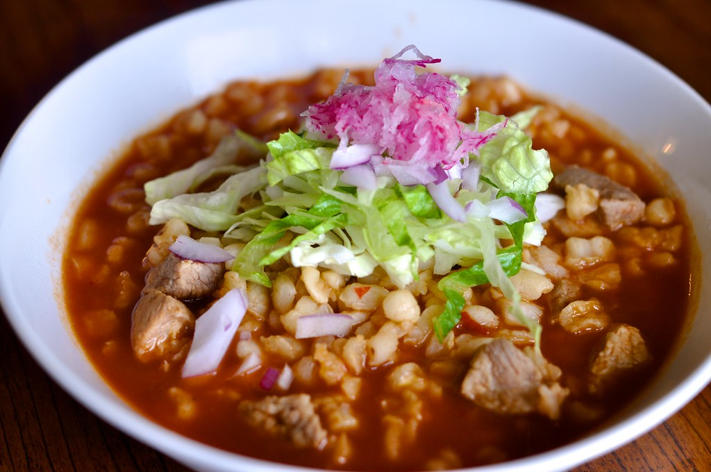
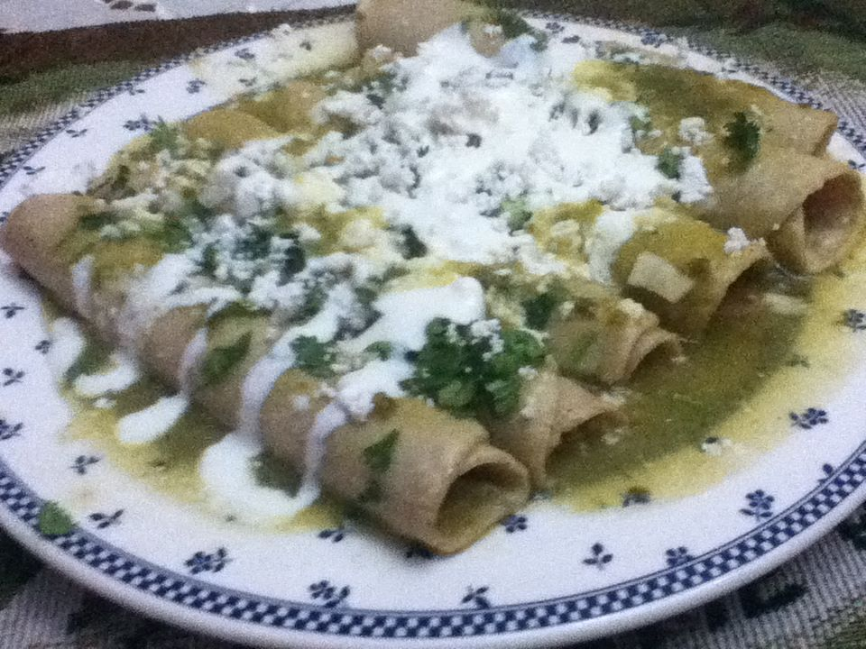
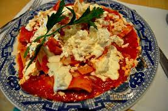
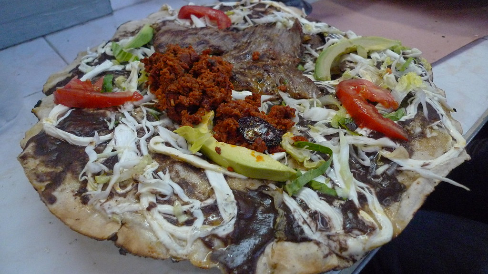
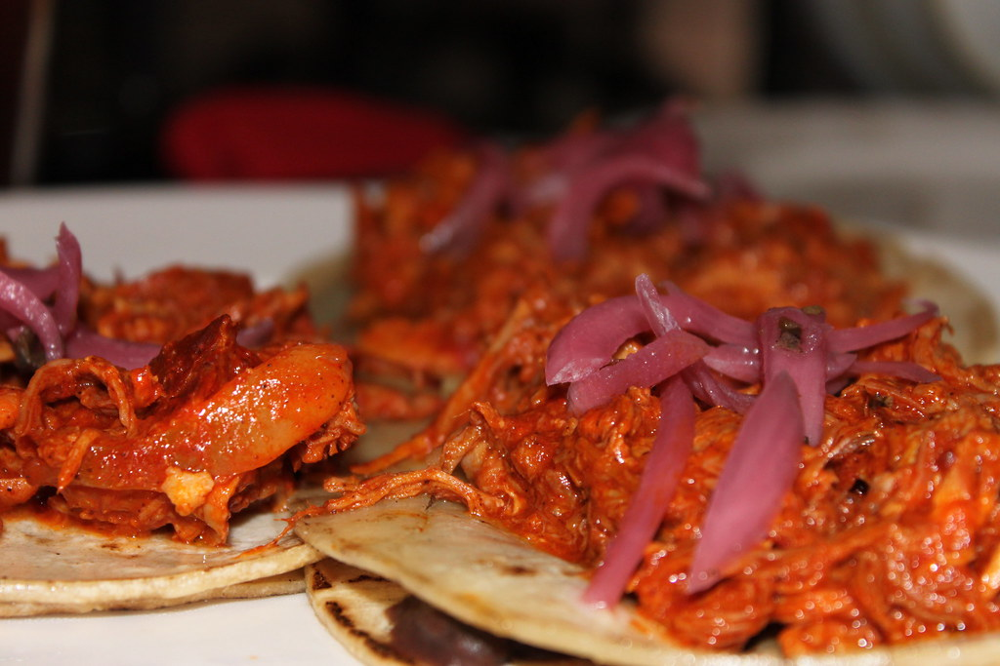

Tacos al Pastor

Carne de cerdo marinada en achiote y especias, asada en un trompo y servida en tortillas con cebolla, cilantro y piña.
Mole Poblano

Compleja salsa a base de chiles, chocolate, especias y diversos ingredientes, servida con pollo o carne de cerdo.
Pozole
Sopa de maíz con carne de cerdo o pollo, chicharrón, lechuga, rábanos y otras guarniciones.
Enchiladas
Tortillas rellenas de carne, pollo o queso, bañadas en salsa roja o verde y espolvoreadas con queso.
Chilaquiles
Totopos de maíz bañados en salsa roja o verde, con pollo, huevos, queso y otros ingredientes.
Tlayudas
Tortillas grandes y ovaladas de maíz, rellenas de frijoles, asiento, tasajo y otros ingredientes regionales.
Cochinita Pibil
Carne de cerdo marinada en achiote y especias, envuelta en hoja de plátano y cocida en un horno de tierra.
Pescado a la Veracruzana

Pescado blanco cocinado en una salsa de jitomate, cebolla, alcaparras y aceitunas.